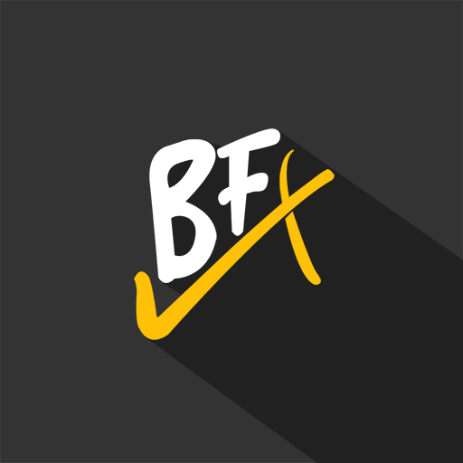
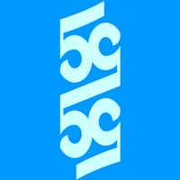

I'm Ken Li
I have a BSc specializing in Computing Science from the University of Alberta!
After graduating, I took a year break from anything code related; however, I am ready to come back and learn all the new tools and frameworks. My first objective is to rework my website using HTML, CSS, JavaScript, and Bootstrap 5. My next goal is to refresh myself on the algorithms taught in school using all the languages I am familiar with.
Technical Experience:| Position | Duration |
|---|---|
| Window Line | May 2019 - Aug 2019 |
| Door Line | May 2017 - Aug 2017 |
| Window Line | Jun 2016 - Aug 2016 |
As a part of CMPUT 250 -- Computer and Games, teams of six were assigned to create a game using BioWare's Aurora engine. Our team, Human Resources Entertainment, created a JRPG-like game and won an award for Excellence in Art and Design. My role was to implement a battle system using Aurora's limited customization, I also combined the story checkpoints, dialogue, and voice acting.
Bronzify
As a part of CMPUT 301 -- Intro to Software Engineering, we were tasked to create an Android application used to track and improve the habits of an individual. My main role was to create the frontend using Android Studio and link it to the backend.
Fifty/Fifty
As a part of INTD 450 -- Computers and Games (Capstone), we were allowed to create any type of game on any engine. From this project, we as a group learned how to prototype and fail fast. We tested out two game engines before finally deciding to use Unity. Our game is a desktop-like simulation were you explore a computer and find out the true personality of the main character.
You can download Thea.png here.As a part of CMPUT 401 -- Software Process and Product Management, we created a mobile and desktop application for a real client. The mobile application was designed to help medical personnel track key procedures during a resuscitation. We also created a desktop application to help parse data generated by simulation mannequins and display the data in readable forms such as graphs and plain text. My main role was to create and maintain the models and APIs.